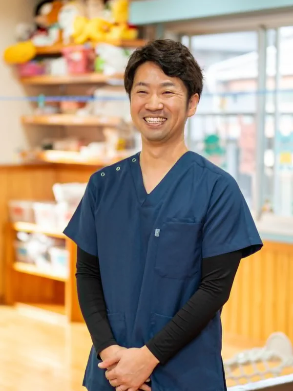
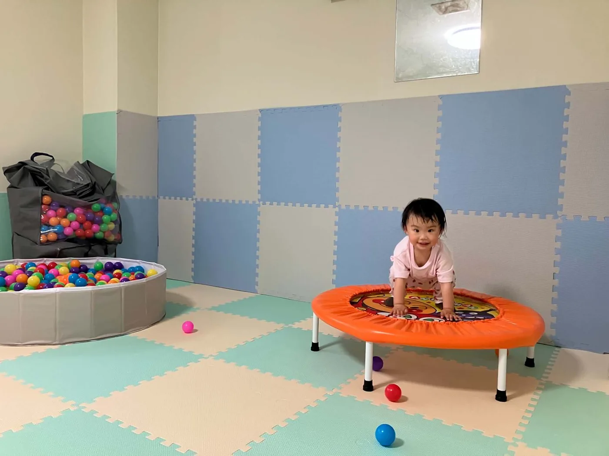
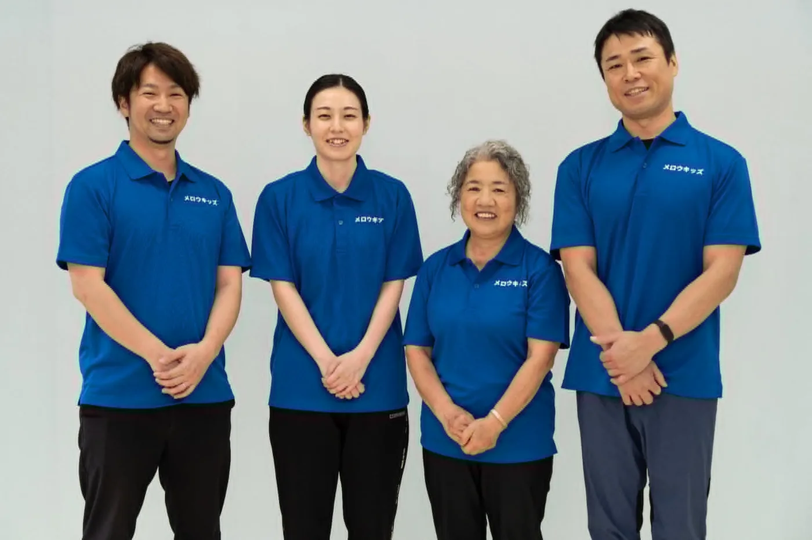

事業所について
奄美市の永田町で、個別〜小集団・短時間集中の療育サービスを行っています。
わたしたちの想いと、事業所についてご紹介します。
代表からのメッセージ
メロウキッズのホームページをご覧いただき、ありがとうございます。
私は、管理者・児童発達支援管理責任者の平城 修吾（ひらぎ しゅうご）と申します。
代表のプロフィールを見る →
子育てを、もっと豊かに
日々の子育てでは、たくさん笑って、たくさん泣いて、時には怒って、悩んで、本当に忙しい毎日を送っていると思います。メロウキッズは、そんなお子さん・お母さん・お父さん・兄弟、すなわち家族が、丸く円熟した日々を過ごすことを願っています。
メロウキッズの「メロウ」という言葉には、「角を取って丸くする」「人の角が取れて丸くなる」という意味が込められています。大切な家族だからこそ、ぶつかったり、言いたいことが言えなかったり、誰にも相談できなかったりします。子育てにまつわる悩みゴトを、我慢しなくていい。そんな奄美を、地域の皆さまとともにつくっていきたいです。
メロウキッズ設立の経緯
私は作業療法士として、島内でこころやからだの病気を抱える方にリハビリテーションを行ってきました。こころの病を抱える方の多くは、学校や職場での人間関係のもつれによって発症し、何十年も入院していました。からだの病を抱える方の多くは、職場で痛みを我慢しながら仕事を続けた結果、病状が悪化して手術や入院に繋がっていました。中には、病によって仕事をやめなければならない方もいました。
これらの経験から、私は「予防」が大切だと感じ、作業療法士が直接職場に会いに行く健康経営支援サービス事業を行うために Mellow Amami 合同会社を設立しました。病気を発症する前の段階で企業と関わることで、より長く健康でいられる組織づくりを続けています。
企業の従業員さまと関わっていると、悩み事は仕事や健康に限らず、家庭生活のものが多く含まれることが分かってきました。夫婦関係や親の介護、ご近所付き合いなどさまざまありますが、とりわけ「子ども」に関する内容は大半を占め、仕事にも大きな影響が出ているケースが多かったのです。
この経験から私は、「子ども達に関わることが一番大切な予防である」と考えています。
家族が元気なら、地域が元気になる。
地域が元気なら、シマが元気になる。
子どもを起点に、シマ全体が元気で豊かになる「メロウアイランド」を実現しよう！ その想いで作ったのが「メロウキッズ」です。そのためメロウキッズでは、子どもの中でも一番早く関わることのできる児童発達支援事業所（未就学児）から始めました。まずは子どもが元気になるために、マンツーマンを中心とした個別・小集団の短時間集中療育を行い、そこから家族や地域、シマ全体へとつなげていきます。
おわりに
メロウアイランドを目指して、メロウキッズでは地域みんなで学べるセミナーを定期的に開催しています。一事業所だけで独占することなく、シマのみんなで学んで助け合える関係性づくりを目的としています。少しでも気になるものがありましたら、是非ともご参加ください。
メロウキッズは「子育てをもっと豊かに」を合言葉に、精進してまいります。まだまだ至らない点も多い小さな事業所ですが、どうぞよろしくお願い申し上げます。
平城 修吾
Mellow Amami LLC. 代表社員
メロウキッズ 管理者／児童発達支援管理責任者
作業療法士／公認心理師／キャリアコンサルタント
作業療法学修士／スクールカウンセラー
（一社）鹿児島県作業療法士協会 代議員
（公社）日本青年会議所 九州地区鹿児島ブロック協議会 副会長
（一社）奄美大島青年会議所 専務理事
（独）労働者健康安全機構 鹿児島県産業保健総合支援センター メンタルヘルス対策・両立支援促進員

円融無碍
メロウキッズでは、違いを否定せず、それぞれが個性を活かしながら社会と調和している状態（あらゆる物事の角を取って丸くする）を目指します。
これは単に優しいというわけではなく、将来的に社会へ適応して「丸く」暮していくために必要なことを、個別・少人数でじっくり向き合って取り組んでいきます。
子育てを、もっと豊かに。

多くの経験をもった
医療系専門職の知識が土台にあります。
メロウキッズには、医療領域で子どもから高齢者まで、からだと心の疾患に向き合ってきたリハビリテーションの専門職が複数在籍しています。
これまでに培ってきた知識とスキルを、子ども・ご家庭に還元します！
運営：Mellow Amami のサイト →事業所概要
| 事業所名 | メロウキッズ |
|---|---|
| 事業種別 | 児童発達支援事業所 |
| 開設 | 2026年5月11日 |
| 所在地 | 〒894-0023 鹿児島県奄美市名瀬永田町14-1 |
| 管理者 | 平城 修吾 |
| 定員 | 10名 |
| 電話・FAX | 0997-58-5511 ／ 0997-58-5544 |
| 協力医療機関 | むかいクリニック |
| 運営 | Mellow Amami 合同会社 |